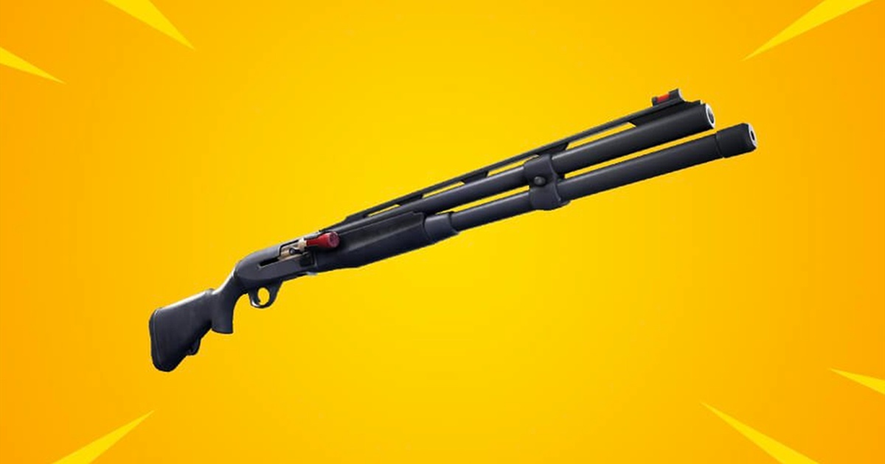

Дробовик - в грі є два дробаша. 1.Помповий(помпа) і Заражаємий(чардж). Тут зображена попмпа. Вони є сірого,зеленого,синього,фіолетового,золотого. Урон чарджа залежить на скільки ти його зарядиш. Якщо зарядиш на повну то урон - від 110хп до 220хп.
Якщо це помпа то урон - від 130хп до 220хп.